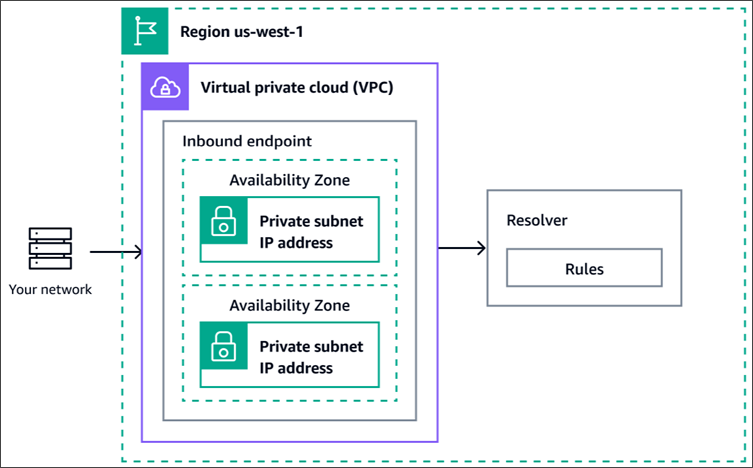
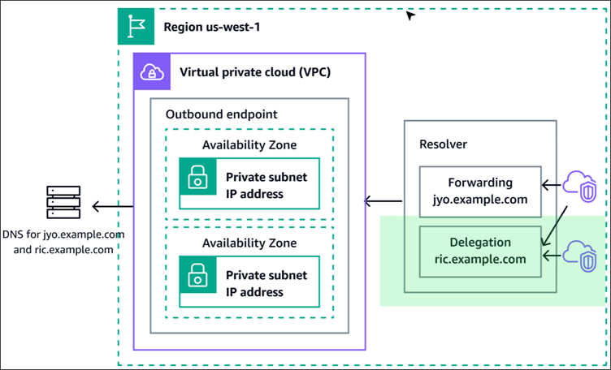

Slides: 10-slides-p194-227.pdf (full PDF p194-227). Page reference PDF p. 359 (part p. 8) = page 359 of the full slide PDF = page 8 of this section's PDF part; click to open the PDF at that page.
Loop: note → PDF part → exam points → Part A → Part B → mistakes again after 2 days.
Age ek nojore
Route 53: AWS er DNS, domain registrar ar health check
Section 08 e ELB ek ta DNS name dey dekhecho (XXX.region.elb.amazonaws.com). Ei section e shikhbo nijer domain (example.com) kivabe oi ELB, EC2, CloudFront e point kore, ar DNS diye user ke kon Region / kon server e pathabo. Exam e sobcheye beshi ashe: CNAME vs Alias (zone apex), TTL (purono IP e jacche keno), kon routing policy (weighted, latency, failover, geolocation, geoproximity, IP-based, multi-value), health check er 3 dhoron (private resource → CloudWatch alarm), registrar vs DNS service (GoDaddy + Route 53), ar Resolver Inbound/Outbound endpoint (hybrid DNS).
CNAME: hostname → jekono hostname, zone apex e na. Alias: hostname → AWS resource, apex e-o hoy, free, native health check, TTL set kora jay na; EC2 DNS name e na
Simple
Ek record, ek ba onek value; onek hole client random ekta ney; health check na
Weighted
Weight diye % traffic bhag (70/20/10); canary / notun version test, migration
Latency-based
User er jonno sobcheye kom latency wala AWS Region
Shohoj kore (phone book): Bondhur naam mone ache, number mone nai. Phone book e naam khujle number pao. DNS = internet er phone book: naam (www.google.com) dile IP (172.217.18.36) dey. Browser IP chara kothao jete pare na.
DNS = Domain Name System: human friendly hostname → machine IP address.
Web server example.com, public IP 9.10.11.12. Browser jante chay example.com er IP:
Recursive lookup
Web Browserexample.com?→Local DNS Servercompany ba ISP er→ 1Root DNS ServerICANN; ".com NS 1.2.3.4"
Local DNS Server→ 2TLD DNS Server (.com)IANA (ICANN er branch); "example.com NS 5.6.7.8"
Local DNS Server→ 3SLD DNS Server (example.com)Domain Registrar er (ex: Amazon Registrar); "A 9.10.11.12"
Local DNS Serveranswer cache kore (TTL)→Browser9.10.11.12 (cache, TTL)→Web Server
Local DNS server prothome kokhono na dekha query hole Root ke jigges kore. Root bole "ami jani na, kintu .com er NS ei IP te".
.com TLD server bole "example.com er NS ei IP te". Shesh e SLD server ashol A record dey.
Local DNS server answer cache kore (TTL porjonto), porer bar sathe sathe answer dey.
Exam: Eta background lecture. Mone rakho: Root → TLD → SLD, ar answer TTL porjonto cache hoy (Lecture 6 e TTL er trap).
Lecture 2 · Route 53 Overview · PDF p. 198-202(part p. 5-9)
Route 53: records, record types, hosted zones
Shohoj kore: Route 53 holo tomar nijer phone book office. Tumi nije entry likhte paro (authoritative), office kokhono bondho hoy na (100% SLA), domain o ekhan theke kinte paro (registrar), ar je number e pathaccho sei manush beche ache kina check o kore (health check).
EC2api.example.internal→ db.example.internal?Private Hosted Zone10.0.0.35→DB Instanceprivate IP
Duita zone ek-i bhabe kaj kore; parthokko shudhu ke query korte pare (internet vs VPC).
Private hosted zone kaj korte VPC te DNS hostnames ar DNS resolution (enableDnsHostnames, enableDnsSupport) duto-i true lagbe. Course e nai, AWS docs e ache: Private hosted zone considerations. course e nai
Exam: Route 53 er kaj: DNS routing (internet traffic ke domain er resource e), domain registration, health check. Duita VPC er moddhe private routing Route 53 er kaj na (seta VPC peering, Section 27) (B4-Q45). Supported record type: A, AAAA, CNAME, MX, SRV sob-i; "SPF (session policy forwarder)" bhul naam, SPF = Sender Policy Framework (B6-Q55). Internal custom domain private hosted zone diye → VPC te enableDnsHostnames + enableDnsSupport; "enableVpcSupport / enableVpcHostnames / enableDnsDomain" bole kichu nai (S1-Q63). Private hosted zone banalam, naam resolve hoy na → DNS hostnames ar DNS resolution on koro (S5-Q20). RDS Multi-AZ failover e Route 53 er CNAME record bodlay, endpoint ek-i thake (Section 09) (B4-Q16).
Lecture 3 + 4 + 5 (hands-on) · Registering a domain, first records, EC2 setup · PDF p. 199-201(part p. 6-8)
Shohoj kore: Prothome naam kino (domain), tarpor phone book e ekta entry likho (A record), tarpor terminal e dig diye dekho entry thik kaj korche kina. Shesh e porer lecture er jonno 3 Region e 3 ta server banao.
Lecture 3: domain register
Route 53 console → Register domains → naam khujo (jeta keu age neyni) → checkout. Instructor er example: US $13 / year.
Duration (ex: 1 year) ar auto-renew: domain rakhte chaile auto-renew on, na hole onno keu kine nite pare.
Contact info (registrant, admin, tech) ar privacy protection on: tomar address, phone internet e lukano thake, spam kom.
Register hote kichu minute theke kichu ghonta.
Domain register korle Route 53 nije ekta hosted zone banay, tate default NS ar SOA record thake. NS bole: ei domain er DNS query Route 53 answer dibe; Route 53-i ekhon source of truth.
Lecture 4: prothom record
Hosted zone → Create record: name test.<domain>, type A, value 11.22.33.44 (random IP), TTL 300 s, routing policy Simple.
Browser e khulle kichu ashe na (oi IP te server nai), kintu DNS thik kaj korche.
Proman: CloudShell e sudo yum install -y bind-utils (nslookup ar dig er jonno), tarpor nslookup test.<domain> ba dig test.<domain>.
dig instructor er pochondo: ANSWER section e record type (A), value ar TTL dekhay.
Lecture 5: lab setup
Ki
Kothay
Setting
EC2 ×3
eu-central-1 (Frankfurt), us-east-1 (N. Virginia), ap-southeast-1 (Singapore)
Amazon Linux 2, t2.micro, key pair na (EC2 Instance Connect), SG e SSH + HTTP anywhere, user data: "Hello World" + AZ naam
ALB ×1
Frankfurt
Internet-facing, IPv4, 3 subnet, oi SG, listener 80 → notun target group (Frankfurt er instance)
Protita instance er public IP ar Region ekta text file e likhe rakho; porer lecture e record er value hobe.
Exam: Register korle hosted zone e NS + SOA nije ashe. dig output e TTL dekha jay. Hands-on er click mukhostho dorkar nai.
Lecture 6 · Route 53 - TTL · PDF p. 203(part p. 10)
TTL (Time To Live): answer koto khon cache thake
Shohoj kore: Bondhur notun phone number tumi notebook e likhe rakhle, 1 din porjonto ar phone book dekho na. Bondhu majhe number bodlale-o tumi 1 din purono number e call korbe. TTL = notebook e likhe rakhar meyad.
Strategy: record bodlanor plan thakle age TTL komao (ex: 24 hr dhore), sobar kache low TTL pouchale value bodlao, tarpor TTL abar barao.
Alias record chara protita record e TTL mandatory.
Hands-on
demo.<domain> A record → eu-central-1 er IP, TTL 120 s.
dig e TTL count down: 115 → 98 → ... (cache er baki shomoy).
Record ap-southeast-1 e edit korlam, kintu dig ar Chrome dutoi purono eu-central-1 dekhalo, karon cache. TTL shesh hole notun IP (ap-southeast-1b) ar dig e TTL abar 120.
Exam: Record notun ELB e point korlam, tobu user purono ELB e jacche → TTL (Alias, CNAME, health check na) (U10-Q3). Simple record update er por user purono LB e → TTL still in effect (simple e health check-i nai) (S4-Q3). "Beshi query, beshi khoroch" → low TTL; "druto change" → low TTL.
Subtitle e ekta jayga bujha jay ni ("IPO menu server"), bad diyechi.
Lecture 7 · Route 53 CNAME vs Alias · PDF p. 204-206(part p. 11-13)
CNAME vs Alias: zone apex er khela
Shohoj kore: ALB er naam lb1-1234.us-east-2.elb.amazonaws.com, eta user ke dewa jay na. Tumi chao myapp.mydomain.com ba shudhu mydomain.com. CNAME = "oi naam e jao" (jekono naam, kintu root e na). Alias = Route 53 er nijer special pointer AWS resource er dike (root e-o chole, free).
Elastic Load Balancers CloudFront Distributions API Gateway Elastic Beanstalk environments S3 Websites (S3 bucket na; website hishebe enable kora bucket) VPC Interface Endpoints Global Accelerator accelerator Route 53 record in the same hosted zone
EC2 DNS name (ei ta mone rakho)
Hands-on
myapp.<domain>CNAME → ALB DNS name: kaj kore (Hello World from eu-central-1c), kintu "AWS native na".
myalias.<domain>A + Alias → "Alias to Application and Classic Load Balancer" → Region eu-central-1 → ALB; Evaluate target health = Yes. Query free.
Apex (name khali) e CNAME → error: "CNAME is not permitted at apex of this zone". Apex e A + Alias → accepted, <domain> khulle ALB er page.
Exam: Apex (mycoolcompany.com) → ELB: Alias, CNAME na (U10-Q1). Domain → ALB: Alias with type A; "Alias with CNAME", "non-Alias A" bhul (B2-Q1). Zone apex → LB: A record aliased to LB DNS name; LB er IP diye A na (IP bodlay), CNAME na (B5-Q13). covid19survey.com → www.covid19survey.com, cost-effective → Alias (same hosted zone er record e alias hoy; apex e CNAME na; MX / NS bhul) (S3-Q19). "EC2 DNS name e Alias" → hoy na. Alias e TTL set kora jay na.
Lecture 8 · Routing Policy - Simple · PDF p. 207-208(part p. 14-15)
Routing policy ki, ar Simple routing
Shohoj kore: Routing policy = phone book office er niyom: ke jiggesh korle kon number bolbe. Office nije call connect kore na, shudhu number bole dey. Tai "routing" shobdo e bhul bujho na: DNS traffic route kore na, shudhu query er answer dey.
Clientfoo.example.com?→Route 53A 11.22.33.44, A 55.66.77.88, A 99.11.22.33→Clientrandom ekta bechhe ney
Unhealthy IP o answer e thakte pare, karon simple e health check nai.
Hands-on
simple.<domain> A → ap-southeast-1 IP, TTL 20 s. Console e routing policy option: 6 ta dekhay, ar ekta (geoproximity) UI er onno jaygay.
Edit kore duita IP (ap-southeast-1 + us-east-1): dig e 2 ta answer; browser refresh e kokhono Singapore, kokhono Virginia = client side choice.
Exam: "DNS traffic route kore" → bhul, DNS shudhu answer dey. Simple + onek value → client random; simple e health check na (tai unhealthy IP o ferot jete pare; Lecture 17 er multi-value er sathe tulona).
Lecture 9 · Routing Policy - Weighted · PDF p. 209(part p. 16)
Weighted: percent hishebe traffic bhag
Shohoj kore: 10 ta customer ashle 7 jon ke shop A, 2 jon ke shop B, 1 jon ke notun shop C te pathao. Notun shop thik chole kina dekhte prothome alpo customer pathano: eta weighted.
Protita resource e koto % request jabe control kora.
Protita record e relative weight:
traffic (%) = ei record er weight / sob record er weight er jogfol.
Weight er jogfol 100 hote hobe na (70 + 20 + 10 sudhu example).
DNS records er same name ar same type hote hobe.
Health check associate kora jay.
Use case: Region er moddhe load balancing, notun app version test (alpo traffic).
Weight 0 → oi resource e traffic bondho (dhire dhire weight shift kora jay).
Sob record weight 0 → sob record shoman bhabe ferot.
Exam: Notun Beanstalk environment e 5% production traffic → Weighted (U10-Q2). Duita EC2 te nirdishto percentage, ELB er bodole Route 53 → Weighted (B5-Q20). On-prem theke AWS migration e 50/50, pore 100% AWS → Route 53 Weighted; Failover active-passive, % bhag kore na (B5-Q40). Elasticity barate → 2 EC2 + ELB ba 2 EC2 + Route 53 weighted; S3 cache, DynamoDB na (B2-Q8). "Canary / blue-green / % / test new version" → Weighted.
Subtitle e ekta jayga "(indistinct)" chhilo, bad diyechi.
Lecture 10 · Routing Policy - Latency · PDF p. 210(part p. 17)
Latency-based: jekhane sobcheye druto
Shohoj kore: Tumi jei shop e sobcheye kom shomoye pouchao, sekhane pathano hoy. Shob shomoy kache-r ta na-o hote pare: rasta bhalo hole durer shop e druto pouchano jay.
User ke sobcheye kom latency er resource e pathay.
Jokhon user er jonno latency priority, tokhon khub kaje lage.
Latency mapa hoy user ar AWS Region er moddhe traffic diye.
Germany er user US e jete pare, jodi oita-i lowest latency hoy (geography na, latency).
Health check associate kora jay (tai failover capability ache).
Route 53 sara prithibir user er latency mape; jar jonno je Region druto, se sekhane.
Hands-on
latency.<domain>: 3 ta A record (3 Region er IP), policy Latency.
IP dile Region nije bolte hoy (ex: ap-southeast-1): Route 53 jane na ekta IP kon Region er.
Europe theke → eu-central-1. VPN e Canada → us-east-1. Hong Kong → ap-southeast-1.
VPN e location bodlale laptop er DNS cache clear hoy, tai sathe sathe notun answer. CloudShell (eu-central-1 e) dig korle ek-i answer, karon tar latency bodlay ni.
Exam: Duita Region, user er response time kom / best experience → Latency (geolocation na) (U10-Q4). us-east-1 e sob, Europe e slow → eu-west-1 e web tier + latency routing ar Aurora read replica eu-west-1 e; geolocation (content er jonno), failover (active-passive), Multi-AZ standby (read serve kore na) na (S2-Q6).
Subtitle e "Alias is not smart enough" = console / Route 53 IP theke Region bujhte pare na; ei bhabe likhechi.
Lecture 11 + 12 (hands-on) · Route 53 - Health Checks · PDF p. 211-214(part p. 18-21)
Health checks: endpoint, calculated, CloudWatch alarm
Shohoj kore: Duita branch office (us-east-1, eu-west-1). Prithibir 15 ta jaygay pahara-dar ache, ora bar bar phone kore dekhe office khola kina. Ekta office bondho hole phone book office oi number dewa bondho kore: eta automated DNS failover.
HTTP health check shudhu public resource er jonno (private er upay niche).
Health check → Automated DNS Failover: multi-Region setup e ek Region down hole user ke sekhane pathabe na. Record e (latency, geoproximity ...) health check jure dao.
Health check er metric CloudWatch metrics e dekha jay.
#
Dhoron
Ki monitor kore
Kokhon
1
Endpoint
Application, server, onno AWS resource (public)
Public ALB / EC2 / website
2
Calculated
Onno health check gulo (child)
Onek check mile ek result; maintenance
3
CloudWatch Alarm
CloudWatch alarm er state ("full control"): DynamoDB throttles, RDS alarm, custom metric
Private resource (VPC, on-premises)
Multi-Region health check (PDF p. 211(part p. 18))
Route 53 DNS Recordlatency, geoproximity ...→Health Check→ALB us-east-1ASG → EC2
Route 53 DNS Record→Health Check→ALB eu-west-1ASG → EC2
Ek Region er health check fail korle tar record answer e ar ashe na.
EC2private subnet, VPC→ metricCloudWatch Alarm← monitorRoute 53 Health CheckerVPC er baire
Health checker sorashori private EC2 dekhte pare na; alarm er state dekhe.
Hands-on (Lecture 12)
3 ta endpoint health check (us-east-1, ap-southeast-1, eu-central-1): IP address, port 80, path / (real app e prai /health).
Advanced: Standard 30 s / Fast 10 s, failure threshold, string matching (prothom 5120 bytes), latency graph, invert health check status, disable, health checker Region customize ba recommended, fail hole alarm / notification.
Singapore instance er SG theke HTTP rule muchlam → oi check unhealthy; "View last failed check" e connection timeout (SG = firewall).
Calculated health check: 3 ta child, "sob healthy hole healthy" (AND) / ek ba beshi (OR) / koyta. Ekta child unhealthy, tai parent-o unhealthy.
CloudWatch alarm type banate Region ar alarm lage (demo te alarm chilo na).
Exam: Valid health check na → "SQS queue monitor"; valid: endpoint, onno health check, CloudWatch alarm (U10-Q7). Private subnet / on-prem resource er health → CloudWatch metric + alarm, health check alarm ke monitor kore. Health check fail → firewall / SG e Route 53 health checker IP allow koro. Pass = 2xx / 3xx; healthy = > 18% checker. Warm standby er manual DNS alias change automate → Route 53 health check (+ failover record); ALB / EC2 health check DNS bodlate pare na, Trusted Advisor na (S5-Q51).
Lecture 13 · Routing Policy - Failover · PDF p. 215(part p. 22)
Failover (Active-Passive)
Shohoj kore: Main generator ar backup generator. Main thik thakle shudhu main; main bondho hole sathe sathe backup chalu. Ekta main, ekta backup: er beshi na.
Primary unhealthy → Route 53 automatic secondary er answer dey.
Secondary te health check optional.
Ekta primary, ekta secondary shudhu.
Client DNS request korle shob shomoy healthy resource pay.
Hands-on
failover.<domain>: eu-central-1 = Primary (health check eu-central-1 jora, bad deya jay na), us-east-1 = Secondary (health check optional); TTL 60 s; Record ID dewa.
eu-central-1 er SG theke port 80 rule muchlam → health check unhealthy (Monitoring tab e healthy checker % 1 theke 0) → refresh e us-east-1.
Rule ferot dile health check pass, abar primary te fail back.
Exam: "Active-passive", "DR Region e automatic DNS failover", "primary down hole secondary" → Failover + health check (S5-Q51). Failover % bhag kore na (seta weighted) (B5-Q40). Primary e health check mandatory.
Subtitle e "(indistinct)" ar "port A" (= port 80) chhilo; port 80 likhechi, baki bad.
Lecture 14 · Routing Policy - Geolocation · PDF p. 216(part p. 23)
Geolocation: user kon desh e
Shohoj kore: Passport dekhe pathano: German user → German version er server, French user → French version. Baki sobai → default (English). Latency na, user er location.
Latency-based theke alada! Routing hoy user er location dekhe.
Location: Continent, Country, ba US State. Overlap hole sobcheye precise location bachai.
Ekta "Default" record banano uchit (location match na hole).
Use case: website localization, restrict content distribution, load balancing.
geo.<domain>: Asia (continent) → ap-southeast-1; United States (country) → us-east-1; Default → eu-central-1.
Europe theke → default (eu-central-1). VPN India → prothome timeout: ager lecture e SG theke HTTP muchhechilam; "timeout dekhle SG check" → rule ferot dile ap-southeast-1.
VPN US → us-east-1. Mexico (US er pashe, kintu rule e nai) → default eu-central-1.
Exam: Aine bole France chara onno desh e website jabe na → Geolocation (shudhu France er record, default na) (U10-Q5). "Desh / continent / localization / content restrict / compliance" → Geolocation. "Response time / fastest" → Latency, Geolocation na (S2-Q6). Match na hole answer pete Default record.
Lecture 15 · Routing Policy - Geoproximity · PDF p. 217-219(part p. 24-26)
Geoproximity: dure + bias diye traffic shift
Shohoj kore: Duita dokan, majhe ekta seemana-rekha: jar kache je dokan, se oikhane jay. Ekta dokan "bias" barale tar chumbok shokti bare, rekha onno dokan er dike sore jay, tai beshi customer tar kache ashe.
Traffic route hoy user ar resource duitar geographic location dekhe.
Bias diye kono resource e beshi traffic shift kora jay.
Geographic region er size bodlate bias:
Expand: 1 to 99 → resource e beshi traffic.
Shrink: -1 to -99 → kom traffic.
Resource: AWS resource (AWS Region bolo) ba non-AWS (ex: on-premises data center: Latitude ar Longitude bolo).
Slide: bias use korte Route 53 Traffic Flow lagbe (eta bodleche, "Course er por ki bodlalo" dekho).
Kom user→us-west-1Bias 0| rekha bam e sore gelo |us-east-1Bias 50←Beshi user
us-east-1 e bias beshi, tai dividing line west er dike sore; US er boro ongsho us-east-1 e jay.
AWS docs er formula (course e nai): biased distance = actual distance × [1 - (bias/100)]; +50 bias = dure ordhek dhora hoy. Geoproximity routing
Exam: "Ek Region theke onno Region e traffic shift korte chai, location dhore" ba "bias" dekhle → Geoproximity. Bias barale (1..99) beshi traffic, komale (-1..-99) kom. Non-AWS resource → latitude / longitude. Geolocation = desh / continent rule; Geoproximity = dure + bias.
Lecture 16 · Routing Policy - IP-based · PDF p. 220(part p. 27)
IP-based: client er IP range dekhe
Shohoj kore: Tumi jano "ei ISP er sob customer er IP 203.0.113.x". Tahole ora shob shomoy kache-r server e jak. Location na, latency na: IP range dekhe niyom.
Routing hoy client er IP address dekhe.
Tumi CIDR list dao ar protita CIDR er jonno endpoint / location (user-IP-to-endpoint mapping). Eta Route 53 e CIDR Collection.
Use case: performance optimize (IP age theke jana), network cost kom (IP kotha theke ashe jana).
Example: nirdishto ISP er end user ke nirdishto endpoint e.
Exam: "Client er IP / CIDR / nirdishto ISP er user" → IP-based routing. Desh dhore hole Geolocation, IP range dhore hole IP-based.
Lecture 17 · Routing Policy - Multi Value · PDF p. 221(part p. 28)
Multi-Value: onek answer, shudhu healthy gulo
Shohoj kore: Simple er moto onek number dey, kintu age check kore kon number gulo chalu. Bondho number list e thake na. Tobu kon number e call korbe ta tumi (client) bachhe nao: eta load balancer na.
Onek resource e traffic route korte chaile.
Route 53 onek value / resource ferot dey.
Health check jora jay: shudhu healthy resource er value ferot.
Proti multi-value query te max 8 ta healthy record.
ELB er substitute na: eta client-side load balancing.
Multi-value
Clientexample.com?→Route 53health check pass kora A record gulo (max 8)→Clientekta bechhe ney
Simple (multiple values)
Multi-Value
Record
Ek record, onek value
Onek record (protita te Record ID)
Health check
Na: unhealthy value-o ferot jete pare
Hya: shudhu healthy ferot
Koyta
Sob value
Max 8 healthy
Ke bachhe
Client random
Client
Hands-on
multi.<domain>: 3 ta record (us-east-1, ap-southeast-1, eu-central-1), policy Multivalue answer, protita te nijer health check, Record ID, TTL 60 s.
dig → 3 ta IP (sob healthy).
eu-central-1 health check e Invert health status (druto unhealthy banano) → dig e 2 ta IP. Pore invert tule dao.
Exam: "Onek IP return, kintu shudhu healthy gulo" → Multi-Value (Simple na, simple e health check nai). "Max 8". "ELB er bodole Multi-Value" → substitute na.
Lecture 8-17 ek table e · Routing policies · PDF p. 207-221(part p. 14-28)
Sob routing policy pasapashi
Policy
Ki dekhe answer
Health check
Keyword (exam)
Simple
Kichu na; onek value hole client random
Na
Single resource, basic
Weighted
Weight / sob weight
Hya
%, 5%, 50/50, canary, notun version test, migration
Latency
User ↔ AWS Region latency
Hya (failover capability)
Fastest, response time kom, best experience
Failover
Primary healthy kina
Primary e mandatory
Active-passive, DR, automatic failover
Geolocation
User er continent / country / US state
Hya
Localization, desh restrict, compliance, Default record
Geoproximity
User ar resource er dure + bias
Hya AWS docs
Bias, traffic shift Region e, lat/long
IP-based
Client IP er CIDR
Course e bola nai
ISP, CIDR, network cost
Multi-Value
Sob healthy value (max 8)
Hya
Onek healthy IP, client-side LB
Geoproximity e health check er kotha lecture / slide e nai; AWS docs (private hosted zone e health check: failover, multivalue, weighted, latency, geolocation, geoproximity) theke likhechi: Private hosted zone considerations. Oi page bole private hosted zone e IP-based chara baki sob policy chole; IP-based doc: "You cannot use IP-based routing policy for records in a private hosted zone" (IP-based routing).
Lecture 18 + 19 · 3rd Party Domains & Route 53, Section Cleanup · PDF p. 222-224(part p. 29-31)
Domain Registrar vs DNS Service (GoDaddy + Route 53)
Shohoj kore: Bari kinecho ek agent er kach theke (registrar), kintu chithi kon thikanay jabe ta manage kore onno ek post office (DNS service). Agent ke bolo "amar chithi oi post office dekhbe" = NS record bodlano.
Domain naam Domain Registrar e kena / register kora hoy, bachhorik dam diye (ex: GoDaddy, Amazon Registrar Inc.).
Registrar sadharonoto ekta DNS service o dey record manage korte.
Kintu onno DNS service use kora jay: ex: GoDaddy theke kino, Route 53 e record manage koro. Ulto-o hoy (Amazon Registrar e kine onno DNS service).
Domain Registrar != DNS Service, jodio prai sob registrar kichu DNS feature dey.
3rd party registrar + Route 53 (PDF p. 223-224(part p. 30-31))
Route 53 e domain er jonno Public Hosted Zone banao.
Hosted zone details e dan dike 4 ta name server ache.
GoDaddy (3rd party) website e custom name servers option e oi 4 ta Route 53 name server boshao = NS record update.
GoDaddy registrar, Route 53 DNS (PDF p. 223(part p. 30))
GoDaddydomain kena; NS → Route 53 er 4 name server→ "kon name server?"Amazon Route 53Public Hosted Zone; sob record ekhane
Query ashle GoDaddy bole "Route 53 er name server e jao"; record manage hoy Route 53 console theke.
Lecture 19: cleanup
Kena domain account e thake; renew korle $12 / year (ba beshi).
Hosted zone use na korle record khali kore delete, na hole $0.50 / month. Record er sonkhya dam e prabhab fele na.
3 Region er EC2, Frankfurt er ALB ar target group delete.
Exam: GoDaddy te kena domain, DNS Route 53 → Public Hosted Zone banao + 3rd party registrar e NS record update; domain transfer lage na, Private Hosted Zone na, "Route 53 er NS update" na (U10-Q6).
Subtitle e "EDNS records that are cleaved" bujha jay ni (= DNS records), bad diyechi.
Slide only (kono lecture nai) · Route 53 Hybrid DNS, Resolver Endpoints · PDF p. 225-227(part p. 32-34)
Hybrid DNS: Resolver Inbound ar Outbound Endpoint
Ei card shudhu slide theke; ei topic er alada kono lecture nai. Kintu exam e ashe (S3-Q35).
Shohoj kore: Duita office (AWS VPC ar tomar on-premises data center), protitar nijer receptionist (DNS resolver). Inbound = baire theke AWS er receptionist ke prosno korar dorja (on-prem → AWS naam). Outbound = AWS er receptionist baire on-prem receptionist ke prosno pathanor dorja (AWS → on-prem naam). Dikta mone rakho: Route 53 Resolver er dik theke in ar out.
Route 53: DNS answer bodlay (Region / endpoint failover). ELB: shudhu LB er target e traffic bondho (Section 08)
Region failover automate → Route 53 health check (S5-Q51)
Standard vs Fast interval
Standard 30 s; Fast 10 s, beshi khoroch
Druto detect → Fast
Domain Registrar vs DNS Service
Registrar: naam kena (bachhorik). DNS service: record manage. Alada company hote pare
GoDaddy + Route 53 → Route 53 e public hosted zone, GoDaddy te NS update
Resolver Inbound vs Outbound
Inbound: on-prem → AWS (on-prem resolver AWS naam jiggesh kore). Outbound: AWS → on-prem (Resolver on-prem e forward kore)
Duidik resolve → duita-i (S3-Q35)
Route 53 routing vs LB routing
Route 53 shudhu DNS answer dey, traffic tar bhitor diye jay na. LB ashol traffic forward kore
"DNS traffic route kore" → bhul
Course er por ki bodlalo
Geoproximity ekhon Traffic Flow chara (10 Jan 2024): slide bole "must use Route 53 Traffic Flow". AWS ekhon geoproximity ke shadharon record er routing policy banieche (console, API, SDK, CLI; public ar private hosted zone). Map dekhte ekhono Traffic Flow. Bias range ekhono 1..99 / -1..-99; resource hishebe AWS Region, Local Zone Group, ba lat/long. Exam e "bias" dekhlei geoproximity; "Traffic Flow lagbe" option thakle purono tothyo. What's New, Geoproximity routing
Route 53 Resolver er notun naam "Route 53 VPC Resolver" (30 Nov 2025): AWS Route 53 Global Resolver (preview; on-prem / remote client er jonno anycast DNS) anar shomoy purono Resolver er naam bodleche. API naam ek-i, configuration ek-i kaj kore. Inbound / Outbound endpoint er concept bodlay ni. Kichu doc e ekhono purono naam. AWS Blog, What is Route 53 VPC Resolver?
Calculated health check: 256 child: slide e 255, lecture e 256; AWS docs bole up to 256, ar calculated check onno calculated check monitor korte pare na. Health check values
Alias target list boro hoyeche: docs e slide er list er sathe App Runner service ar OpenSearch Service o ache. Ar same hosted zone er onno record e alias korle type A/AAAA chara onno type-o hote pare (NS ar SOA chara); apex e CNAME record e alias na. EC2 DNS name ekhono list e nai. Alias record values, Alias common values
Dam ek-i: hosted zone $0.50 / month (prothom 25 ta zone er jonno), AWS resource e Alias query free. Route 53 Pricing
Exam e ki mone rakhbo
Route 53 basics
Route 53 = managed, authoritative DNS + registrar + health check; 100% SLA (ekmatro AWS service); port 53.
Route 53 er kaj na: duita VPC er moddhe private routing (oita VPC peering) (B4-Q45).
Must-know type: A (IPv4), AAAA (IPv6), CNAME (hostname → hostname, apex e na), NS. MX, SRV, TXT, SOA, CAA ... o support kore; "SPF = session policy forwarder" bhul (B6-Q55).
Hosted zone $0.50/month; domain ~$12/year. Public = internet; Private = VPC.
Private hosted zone kaj korche na / banate → VPC te enableDnsHostnames + enableDnsSupport (DNS hostnames + DNS resolution) true (S1-Q63, S5-Q20).
RDS Multi-AZ failover e CNAME record standby te flip hoy (B4-Q16).
TTL
Record bodlalam, user purono ELB e → TTL (U10-Q3, S4-Q3).
High TTL = kom query, purono record; Low TTL = beshi query ($), druto change. Alias chara sob record e TTL mandatory.
CNAME vs Alias
Zone apex (example.com) → AWS resource: Alias A record; CNAME apex e na (U10-Q1, B2-Q1, B5-Q13).
Apex → www (same hosted zone), cheapest → Alias (S3-Q19).
LB er IP diye A record na (IP bodlay); Alias IP change nije bujhe.
Alias: free, native health check, TTL set kora jay na, type A/AAAA. Target: ELB, CloudFront, API Gateway, Beanstalk, S3 website, VPC Interface Endpoint, Global Accelerator, same zone record. EC2 DNS name na.
Routing policy: keyword → answer
% traffic, 5% notun version, 50/50 migration → Weighted (U10-Q2, B5-Q20, B5-Q40). Weight 0 = bondho; sob 0 = shoman. Same name + type.
Response time kom / best experience → Latency (U10-Q4). Europe e slow → eu-west-1 web tier + latency + Aurora read replica eu-west-1 (S2-Q6).
Ek desh chara sob block / localization → Geolocation (U10-Q5). Continent / country / US state; most precise jete; Default record.
Bias diye Region e traffic shift → Geoproximity (1..99 expand, -1..-99 shrink; non-AWS = lat/long).
Client IP / CIDR / ISP → IP-based.
Active-passive DR → Failover; primary e health check mandatory; ek primary, ek secondary.
Onek IP, shudhu healthy → Multi-Value (max 8; ELB er substitute na). Simple e health check nai, client random.
"DNS traffic route kore" → bhul; DNS shudhu answer dey.
Health checks
Tin dhoron: endpoint, calculated (onno check), CloudWatch alarm. SQS queue health check bole kichu nai (U10-Q7).
Endpoint: ~15 global checker, threshold 3, interval 30 s (fast 10 s, beshi $), HTTP/HTTPS/TCP, > 18% healthy → healthy, 2xx/3xx pass, text prothom 5120 bytes, firewall e Route 53 checker IP allow.
Calculated: OR / AND / NOT, child 256 (slide 255), maintenance.
Private / on-prem resource → CloudWatch metric + alarm, health check alarm monitor kore (checker VPC er baire).
Warm standby DNS failover automate → Route 53 health check; ALB / EC2 health check / Trusted Advisor na (S5-Q51).
Registrar ar Hybrid DNS
GoDaddy domain + Route 53 DNS → Public Hosted Zone + 3rd party registrar e NS update; transfer na, private zone na (U10-Q6).
Registrar != DNS service.
On-prem → AWS naam → Inbound endpoint. AWS → on-prem naam → Outbound endpoint (conditional forward). Duidik → duita. "Universal endpoint" nai; dik ulto option bhul (S3-Q35).
Route 53 Resolver default e answer dey: EC2 local naam, Private Hosted Zone, public record. Ekhon naam "Route 53 VPC Resolver".
Part A: Udemy course quiz (7)
The instructor's own section quiz: warm-up, direct questions. Answer first, then press Check.
A1U10-Q1Udemy quiz · sec 10 · Q1
You have purchased mycoolcompany.com on Amazon Route 53 Registrar and would like the domain to point to your Elastic Load Balancer my-elb-1234567890.us-west-2.elb.amazonaws.com. Which Route 53 Record type must you use here?
Correct: B. Why it is right
mycoolcompany.com holo zone apex (root domain). Apex e CNAME banano jay na, tai ELB er DNS name e point korte Alias record lagbe (PDF p. 200(part p. 7), 204-205).
Alias AWS resource (ELB, CloudFront, S3 website...) e point kore, root ar non-root dui jaygay kaj kore, query free, ar ELB er IP bodlaleo nije bujhe nay.
Why the other options are wrong
A. CNAME shudhu non-root naam e chole (jemon www.mycoolcompany.com); zone apex mycoolcompany.com e CNAME allowed na.
Keyword:mycoolcompany.com (zone apex) → ELB → Alias
Instructor feedback (English)
A: You can't create a CNAME record that has the same name as the top node of the DNS namespace (Zone Apex), in our case "mycoolcompany.com."
A2U10-Q2Udemy quiz · sec 10 · Q2
You have deployed a new Elastic Beanstalk environment and would like to direct 5% of your production traffic to this new environment. This allows you to monitor for CloudWatch metrics and ensuring that there're no bugs exist with your new environment. Which Route 53 Record type allows you to do so?
Correct: B. Why it is right
Weighted routing e proti record e ekta relative weight dao, traffic shei hishebe bhag hoy: traffic % = record er weight / sob record er weight er jogfol (PDF p. 209(part p. 16)).
Notun environment e weight 5, purono te 95 dile ~5% request notun environment e jabe. Course er use case: testing new application versions. Sob thik thakle weight bariye full shift kora jay.
Why the other options are wrong
A. Simple e ekta record (onek value thakle client random nay); kono % control nai.
C. Latency user ke lowest latency er Region e pathay; nirdishto % traffic bhag kore na.
D. Failover active-passive: primary healthy thakle sob traffic primary te; % split kore na.
Keyword:5% of production traffic notun environment e → Weighted
Instructor feedback (English)
B: Weighted Routing Policy allows you to redirect part of the traffic based on weight (e.g., percentage). It's a common use case to send part of traffic to a new version of your application.
A3U10-Q3Udemy quiz · sec 10 · Q3
You have updated a Route 53 Record's myapp.mydomain.com value to point to a new Elastic Load Balancer, but it looks like users are still redirected to the old ELB. What is a possible cause for this behavior?
Correct: C. Why it is right
Proti DNS record er ekta TTL thake: client / DNS resolver answer ta TTL porjonto cache kore rakhe (PDF p. 203(part p. 10)). Record update korar por-o jader kache purono answer cache e ache, tara TTL shesh na howa porjonto purono ELB e-i jabe.
Tip: record change er age TTL komiye nao, tahole change druto chhoray.
Why the other options are wrong
A. Alias record ELB er IP change nije bujhe nay; update korle notun target-i dey. Purono ELB e jawar karon cache.
B. CNAME update korle-o Route 53 notun value-i ferot dey; problem holo client er cache (TTL), record type na.
D. Health check unhealthy record ke answer theke baad dey; purono ELB e pathay na.
Keyword: Record updated, tobu user still purono ELB e → TTL (cache)
Instructor feedback (English)
C: Each DNS record has a TTL (Time To Live) which orders clients for how long to cache these values and not overload the DNS Resolver with DNS requests. The TTL value should be set to strike a balance between how long the value should be cached vs. how many requests should go to the DNS Resolver.
A4U10-Q4Udemy quiz · sec 10 · Q4
You have an application that's hosted in two different AWS Regions us-west-1 and eu-west-2. You want your users to get the best possible user experience by minimizing the response time from application servers to your users. Which Route 53 Routing Policy should you choose?
Correct: C. Why it is right
Latency-based routing user ke shei Region er resource e pathay jeta tar jonno lowest latency dey (PDF p. 210(part p. 17)). Latency mapa hoy user ar AWS Region er moddher traffic dekhe.
Duita Region (us-west-1, eu-west-2), goal response time minimize: tai Latency.
Why the other options are wrong
A. Multi-Value onek healthy value return kore (max 8), client ekta nay; kon Region druto seta dekhe na.
B. Weighted fixed % e traffic bhag kore; user er jonno kon Region druto seta dekhe na.
D. Geolocation user er desh / continent er rule dhore route kore, latency dhore na; fastest Region guarantee kore na.
Keyword:minimizing the response time, duita Region → Latency
Instructor feedback (English)
C: Latency Routing Policy will evaluate the latency between your users and AWS Regions, and help them get a DNS response that will minimize their latency (e.g. response time)
A5U10-Q5Udemy quiz · sec 10 · Q5
You have a legal requirement that people in any country but France should NOT be able to access your website. Which Route 53 Routing Policy helps you in achieving this?
Correct: D. Why it is right
Geolocation routing user er location (continent, country, US state) dhore answer dey (PDF p. 216(part p. 23)). Shudhu France er jonno record banao ar Default record banio na: tahole onno desh er user kono answer pabe na, site e dhukte parbe na.
Course er use case: restrict content distribution.
Why the other options are wrong
A. Latency lowest latency er Region e pathay; user kon desh theke ashche seta dhore block korte pare na.
B. Simple sobaike ek-i answer dey; desh dhore alada kora jay na.
C. Multi-Value onek healthy IP return kore; location dhore filter kore na.
Keyword:any country but France access na → Geolocation (shudhu France record, Default na)
A6U10-Q6Udemy quiz · sec 10 · Q6
You have purchased a domain on GoDaddy and would like to use Route 53 as the DNS Service Provider. What should you do to make this work?
Correct: D. Why it is right
Domain Registrar ar DNS service alada company hote pare (PDF p. 222-224(part p. 29-31)). GoDaddy te kena domain er DNS Route 53 e manage korte:
Route 53 e Public Hosted Zone banao (internet theke query ashbe).
3rd party registrar (GoDaddy) er website e NS record update kore Route 53 er name server boshao.
Why the other options are wrong
A. Domain transfer lage na; registrar GoDaddy thakleo Route 53 ke DNS service hishebe use kora jay.
B. Private Hosted Zone shudhu VPC er bhitorer query answer kore; internet user website khujle eta kaj korbe na.
C. NS update korte hoy registrar (GoDaddy) e, Route 53 e na; Route 53 hosted zone er NS record nije-i banay.
Keyword:purchased on GoDaddy, Route 53 = DNS Service → Public Hosted Zone + 3rd party registrar e NS update
Instructor feedback (English)
B: Private Hosted Zones are meant to be used for internal network (e.g., VPC) DNS queries and are not publicly accessible.
D: Public Hosted Zones are meant to be used for people requesting your website through the Internet. Finally, NS records must be updated on the 3rd party Registrar.
A7U10-Q7Udemy quiz · sec 10 · Q7
Which of the following are NOT valid Route 53 Health Checks?
Correct: A. Why it is right
Route 53 health check 3 dhoroner (PDF p. 211(part p. 18)):
Onno health check monitor (Calculated Health Check)
CloudWatch Alarm monitor
SQS queue monitor kora health check bole kichu nai, tai A valid na.
Why the other options are wrong
B. Valid: endpoint monitor kora health check (HTTP, HTTPS, TCP), ~15 global health checker diye.
C. Valid: Calculated Health Check, onek child health check er result AND / OR / NOT diye jog kore.
D. Valid: CloudWatch Alarm monitor kora health check, private resource er jonno kaje lage.
Keyword:NOT valid → SQS Queue (valid: endpoint, other health checks, CloudWatch alarm)
Part B: Practice exam questions (15)
Everything these questions need is covered up to this section (in your study order). Answer first, ~2 min per question. Then read every explanation, also for the ones you got right.
B1B2-Q8Bonso set 2 · Q8Highly Available Network Design
A start-up company has an EC2 instance that is hosting a web application. The volume of users is expected to grow in the coming months and hence, you need to add more elasticity in your AWS architecture.
Which of the following methods can help add elasticity to your existing AWS setup? (Choose 2)
Choose 2 answers
Correct: A, C. Why it is right
Elasticity = load onujayi resource barano-komano; ekhane horizontal scaling (onek instance) lagbe (PDF p. 122(Section 08 part p. 4)). Duita upay:
A: 2+ EC2 ke ELB er pichone rakho; ELB traffic sob instance e chhoray ar health check kore (PDF p. 126(Section 08 part p. 8)).
C: 2 EC2 te Route 53 Weighted routing; weight onujayi traffic bhag hoy (PDF p. 209(part p. 16)).
Why the other options are wrong
B. S3 object storage; EC2 er samne 'S3 cache' boshiye web tier er instance ba traffic distribution bare na.
D. DynamoDB ekta database; DB add korle web server er sonkhya ba load sharing bare na.
Keyword:add elasticity web tier e → onek EC2 + ELB, ba onek EC2 + Route 53 Weighted
Original explanation (English)
Using an Elastic Load balancer is an ideal solution for adding elasticity to your application. Alternatively, you can also create a policy in Route53, such as a Weighted routing policy, to evenly distribute the traffic to 2 or more EC2 instances.
Amazon RDS automatically switches over to the standby database in the event of an unplanned outage of your primary database.
In such a case, which record in Route53 is changed?
Correct: B. Why it is right
RDS Multi-AZ e app ek ta DNS name use kore; failover hole automatic standby te chole jay (PDF p. 168(Section 09 part p. 8)). Eta hoy DNS e: RDS DB endpoint er CNAME record ke promoted standby er dike flip kore dey.
Tai app er connection string bodlate hoy na.
Why the other options are wrong
A. DNAME puro subtree ke onno domain e redirect kore; Route 53 er supported record list e-i nai, RDS failover e bodlay na.
C. TXT record text info rakhe (jemon domain verification); kono host e point kore na.
D. MX record mail server dekhay; DB endpoint er sathe somporko nai.
Keyword: RDS switches over to the standby, endpoint same → CNAME flip
Original explanation (English)
Failover is automatically handled by Amazon RDS so that you can resume database operations as quickly as possible without administrative intervention. When failing over, Amazon RDS simply flips the canonical name record (CNAME) in Route53 for your DB instance to point at the standby, which in turn is promoted to become the new primary.
In Route53, which record type will you use if you want to point a domain name (such as tutorialsdojo.com) to an Application Load Balancer?
Correct: D. Why it is right
tutorialsdojo.com holo zone apex. Apex e CNAME chole na, tai ALB er dike Alias lagbe. AWS resource er jonno Alias record sob shomoy type A / AAAA (PDF p. 205(part p. 12)); IPv4 er jonno Alias A.
Alias ALB er IP change nije bujhe nay, ar query free.
Why the other options are wrong
A. Non-Alias A record e fixed IP dite hoy; ALB er IP AWS-managed, bodlate pare, tai IP hardcode kora jay na.
B. AAAA = IPv6. ALB dualstack na hole AAAA alias kaj korbe na; domain → ALB er standard uttor Alias A.
C. AWS resource er Alias type A / AAAA; CNAME type e Alias hoy na, ar apex e CNAME allowed-i na.
Keyword:domain name (apex) → ALB → Alias with type A
Original explanation (English)
You can use Amazon Route53 as the DNS service for your domain, such as example.com. When Route53 is your DNS service, it routes Internet traffic to your website by translating friendly domain names like www.example.com into numeric IP addresses, like 192.0.2.1, that computers use to connect to each other. When someone enters your domain name in a browser or sends you email, a DNS query is forwarded to Route53, which responds with the appropriate value, for example, the IP address for the web server for example.com.
To route the traffic from your domain name to an Elastic Load Balancer, you have to use an alias with a type "A" record set.
A client is hosting their company website on a cluster of web servers that are behind a public-facing load balancer. The client also uses Amazon Route53 to manage their public DNS.
How should the client configure the DNS zone apex record to point to the load balancer?
Correct: D. Why it is right
Zone apex e CNAME banano jay na, ar load balancer er IP AWS-managed, jekono shomoy bodlate pare (PDF p. 204-205(part p. 11-12)). Tai A record with Alias to LB DNS name: Alias apex e kaj kore ar IP change nije bujhe nay.
Why the other options are wrong
A. LB er IP fixed na (scaling / update e bodlay), tai IP hardcode kora A record ekdin bhenge jabe.
B. Zone apex e CNAME allowed na; CNAME shudhu www er moto non-root naam e chole.
C. AWS resource er Alias type A / AAAA hoy, CNAME na; ar apex e CNAME type record-i banano jay na.
Keyword:zone apex → load balancer → A record aliased to LB DNS name
Original explanation (English)
Route53's DNS implementation connects user requests to infrastructure running inside (and outside) of Amazon Web Services (AWS). For example, if you have multiple web servers running on Amazon Elastic Compute Cloud (Amazon EC2) instances behind an Elastic Load Balancing load balancer, Route53 will route all traffic addressed to your website (e.g. www.example.com) to the load balancer DNS name (e.g. elb1234.elb.amazonaws.com).
Additionally, Route53 supports the alias resource record set, which lets you map your zone apex (e.g. example.com) DNS name to your load balancer DNS name. IP addresses associated with Elastic Load Balancing can change at any time due to scaling or software updates. Route53 responds to each request for an alias resource record set with one IP address for the load balancer.
B5S3-Q19Stephane set 3 · Q19Design Cost-Optimized Architectures
A startup has created a new web application for users to complete a risk assessment survey for COVID-19 symptoms via a self-administered questionnaire. The startup has purchased the domain covid19survey.com using Route 53. The web development team would like to create a Route 53 record so that all traffic for covid19survey.com is routed to www.covid19survey.com. As a solutions architect, which of the following is the MOST cost-effective solution that you would recommend to the web development team?
Correct: B. Why it is right
covid19survey.com holo zone apex; apex e CNAME banano jay na (PDF p. 200(part p. 7)). Alias apex e kaj kore, ar Alias target hote pare same hosted zone er onno Route 53 record (www.covid19survey.com) (PDF p. 206(part p. 13)).
Most cost-effective: Route 53 AWS resource e Alias query er charge ney na, CNAME query te charge ney (PDF p. 204(part p. 11)).
Why the other options are wrong
A. Apex (covid19survey.com) e CNAME allowed na; ar CNAME query er charge ache.
C. MX record mail server er jonno; web traffic onno naam e pathay na.
D. NS record hosted zone er name server dekhay; ek naam theke onno naam e traffic pathay na.
Keyword:covid19survey.com (apex) → www, MOST cost-effective → Alias
Original explanation (English)
Correct option:
"Create an alias record for covid19survey.com that routes traffic to www.covid19survey.com"
Alias records provide a Route 53–specific extension to DNS functionality. Alias records let you route traffic to selected AWS resources, such as CloudFront distributions and Amazon S3 buckets.
You can create an alias record at the top node of a DNS namespace, also known as the zone apex, however, you cannot create a CNAME record for the top node of the DNS namespace. So, if you register the DNS name covid19survey.com, the zone apex is covid19survey.com. You can't create a CNAME record for covid19survey.com, but you can create an alias record for covid19survey.com that routes traffic to www.example.com.
Exam Alert:
You should also note that Route 53 doesn't charge for alias queries to AWS resources but Route 53 does charge for CNAME queries. Additionally, an alias record can only redirect queries to selected AWS resources such as S3 buckets, CloudFront distributions, and another record in the same Route 53 hosted zone; however a CNAME record can redirect DNS queries to any DNS record. So, you can create a CNAME record that redirects queries from app.covid19survey.com to app.covid19survey.net.
Incorrect options:
"Create a CNAME record for covid19survey.com that routes traffic to www.covid19survey.com" - You cannot create a CNAME record for the top node of the DNS namespace, so this option is incorrect.
"Create an MX record for covid19survey.com that routes traffic to www.covid19survey.com" - An MX record specifies the names of your mail servers and, if you have two or more mail servers, the priority order. It cannot be used to create a Route 53 record to route traffic for the top node of the DNS namespace, so this option is incorrect.
"Create an NS record for covid19survey.com that routes traffic to www.covid19survey.com" - An NS record identifies the name servers for the hosted zone. It cannot be used to create a Route 53 record to route traffic for the top node of the DNS namespace, so this option is incorrect.
B6S5-Q51Stephane set 5 · Q51Design Resilient Architectures
A startup has created a cost-effective backup solution in another AWS Region. The application is running in warm standby mode and has Application Load Balancer (ALB) to support it from the front. The current failover process is manual and requires updating the DNS alias record to point to the secondary ALB in another Region in case of failure of the primary ALB.
As a Solutions Architect, what will you recommend to automate the failover process?
Correct: D. Why it is right
Manual DNS change automate korte Route 53 health check + Failover (active-passive) record use koro (PDF p. 211(part p. 18), 215). Primary ALB er record e health check (mandatory); fail korle Route 53 nije secondary Region er ALB return kore.
Alias record er native health check (evaluate target health) o ei kaje lage (PDF p. 204(part p. 11)).
Why the other options are wrong
A. ALB health check shudhu ALB er target (EC2) healthy kina dekhe; DNS bodlate pare na, onno Region e pathay na.
B. EC2 status check instance er health dekhe; DNS record change kore failover korte pare na.
C. Trusted Advisor best-practice recommendation dey; automatic DNS failover kore na.
Keyword:manual DNS alias update → automate failover onno Region e → Route 53 health check (+ Failover)
Original explanation (English)
Correct option:
Enable an Amazon Route 53 health check - Determining the health of an ELB endpoint is more complex than health checking a single IP address. For example, what if your application is running fine on EC2, but the load balancer itself isn't reachable? Or if your load balancer and your EC2 instances are working correctly, but a bug in your code causes your application to crash? Or how about if the EC2 instances in one Availability Zone of a multi-AZ ELB are experiencing problems?
Route 53 DNS Failover handles all of these failure scenarios by integrating with ELB behind the scenes. Once enabled, Route 53 automatically configures and manages health checks for individual ELB nodes. Route 53 also takes advantage of the EC2 instance health checking that ELB performs (information on configuring your ELB health checks is available here). By combining the results of health checks of your EC2 instances and your ELBs, Route 53 DNS Failover can evaluate the health of the load balancer and the health of the application running on the EC2 instances behind it. In other words, if any part of the stack goes down, Route 53 detects the failure and routes traffic away from the failed endpoint.
Using Route 53 DNS Failover, you can run your primary application simultaneously in multiple AWS regions around the world and failover across regions. Your end-users will be routed to the closest (by latency), healthy region for your application. Route 53 automatically removes from service any region where your application is unavailable - it will pull an endpoint out of service if there is region-wide connectivity or operational issue, if your application goes down in that region, or if your ELB or EC2 instances go down in that region.
Incorrect options:
Enable an ALB health check - ELB health check verifies that a specified TCP port on an instance is accepting connections or a specified page has returned an error code of 200. It is not useful for the given failover scenario.
Enable an EC2 instance health check - Instance status checks monitor the software and network configuration of your instance. It is not intelligent enough to understand if the application on the instance is working correctly. Hence, this is not the right choice for the given use-case.
Configure Trusted Advisor to check on unhealthy instances - AWS Trusted Advisor examines the health check configuration for Auto Scaling groups. If Elastic Load Balancing is being used for an Auto Scaling group, the recommended configuration is to enable an Elastic Load Balancing health check. Trusted Advisor recommends certain configuration changes by comparing your system configurations to AWS Best practices. It cannot handle a failover as Route 53 can.
B7S2-Q6Stephane set 2 · Q6Design High-Performing Architectures
A silicon valley based startup provides a modern content management application built on open standards that unlocks the power of business-critical content. The web-tier of the application runs on EC2 instances and the database tier is on Amazon Aurora. Currently the entire infrastructure is located in us-east-1 region. The startup has 90% of its customers in the US and Europe. The engineering team is getting reports of deteriorated application performance from customers in Europe with high application load time. As a solutions architect, which of the following would you recommend to address these performance issues? (Select 2)
Choose 2 answers
Correct: A, C. Why it is right
A: eu-west-1 e web tier er EC2 fleet + Route 53 Latency routing: Europe er user lowest latency er Region (eu-west-1) e jabe, US user us-east-1 e (PDF p. 210(part p. 17)).
C: Aurora cross-Region read replica eu-west-1 e: Europe er web tier kache theke read korbe, load time kombe (PDF p. 173(Section 09 part p. 13)).
Problem holo performance / load time, tai latency routing + read replica.
Why the other options are wrong
B. Geolocation desh / continent er rule dhore route kore (localization, content restrict er jonno); fastest Region dhore na. Performance er jonno Latency.
D. Multi-AZ standby ek Region er bhitore onno AZ e thake, onno Region e na; ar standby read serve kore na, shudhu availability / DR (PDF p. 168(Section 09 part p. 8)).
E. Failover active-passive: primary (us-east-1) healthy thakle Europe user o oikhanei jabe; performance bare na.
Keyword:Europe user er high load time → eu-west-1 web tier + Latency routing + Aurora read replica eu-west-1 e
Original explanation (English)
Amazon Route 53 is a highly available and scalable cloud Domain Name System (DNS) web service.
Geolocation routing lets you choose the resources that serve your traffic based on the geographic location of your users, meaning the location that DNS queries originate from. For example, you might want all queries from Europe to be routed to an ELB load balancer in the Frankfurt region. You can also use geolocation routing to restrict distribution of content to only the locations in which you have distribution rights.
Use latency based routing when you have resources in multiple AWS Regions and you want to route traffic to the region that provides the lowest latency. To use latency-based routing, you create latency records for your resources in multiple AWS Regions. When Route 53 receives a DNS query for your domain or subdomain (example.com or acme.example.com), it determines which AWS Regions you've created latency records for, determines which region gives the user the lowest latency, and then selects a latency record for that region. Route 53 responds with the value from the selected record, such as the IP address for a web server. Latency routing policy is the correct choice for the given use-case.
Failover routing lets you route traffic to a resource when the resource is healthy or to a different resource when the first resource is unhealthy. The primary and secondary records can route traffic to anything from an Amazon S3 bucket that is configured as a website to a complex tree of records
Amazon Aurora is a MySQL and PostgreSQL-compatible relational database built for the cloud, that combines the performance and availability of traditional enterprise databases with the simplicity and cost-effectiveness of open source databases. Amazon Aurora features a distributed, fault-tolerant, self-healing storage system that auto-scales up to 64TB per database instance.
Amazon Aurora read replicas can be used to scale out reads across regions. Aurora Replicas work well for read scaling because they are fully dedicated to read operations on your cluster volume. Therefore, it is the correct choice for the given use-case.
Amazon Aurora Multi-AZ enhances the availability and durability for the database, it does not help in read scaling, so it is not a correct option for the given use-case.
Amazon Route53 is a highly available and scalable cloud Domain Name System (DNS) web service.
Which of the following is not a function of Route53?
Correct: C. Why it is right
Route 53 er 3 kaj (PDF p. 198(part p. 5)): DNS (domain er query answer kore user ke resource e pathano), Domain Registrar, ar resource er health check.
Duita VPC er moddhe private routing Route 53 kore na; seta VPC Peering (PDF p. 732(Section 27 part p. 33)).
Why the other options are wrong
A. Eta Route 53 er main kaj: DNS diye internet traffic ke domain er resource e pathano.
B. Route 53 Domain Registrar-o; ekhan theke domain kena jay.
D. Route 53 health check endpoint, onno health check ba CloudWatch alarm monitor kore; eta Route 53 er kaj.
Keyword:not a function → duita VPC er private routing (seta VPC Peering)
Original explanation (English)
Amazon Route53 has 3 main functions as shown below:
Register domain names – Your website needs a name, such as example.com. Amazon Route53 lets you register a name for your website or web application, known as a domain name.
Route internet traffic to the resources for your domain – When a user opens a web browser and enters your domain name in the address bar, Amazon Route53 helps the Domain Name System (DNS) connect the browser with your website or web application.
Check the health of your resources – Amazon Route53 sends automated requests over the Internet to a resource, such as a web server, to verify that it's reachable, available, and functional.
B9S1-Q63Stephane set 1 · Q63Design Resilient Architecturesnot in course
The engineering team at an ecommerce company wants to set up a custom domain for internal usage such as internaldomainexample.com. The team wants to use the private hosted zones feature of Route 53 to accomplish this. Which of the following settings of the VPC need to be enabled?
Choose 2 answers
Not in the course: VPC er DNS setting (enableDnsSupport, enableDnsHostnames) course e poray na; Route 53 private hosted zone use korte duto-i true korte hoy.
Correct: C, E. Why it is right
Private hosted zone er query shudhu Amazon VPC DNS server (Route 53 Resolver) answer kore. Tai VPC te duita attribute true korte hobe: enableDnsSupport (DNS resolution) ar enableDnsHostnames.
Private Hosted Zone course e ache (PDF p. 201-202(part p. 8-9)), kintu ei VPC setting course e poray na; AWS docs theke.
Why the other options are wrong
A.enableVpcSupport naam e kono VPC attribute nai; distractor.
B.enableVpcHostnames bole kichu nai; asol naam enableDnsHostnames.
D.enableDnsDomain naam e kono VPC setting nai; distractor.
Keyword:private hosted zones → VPC te enableDnsHostnames + enableDnsSupport
Original explanation (English)
A private hosted zone is a container for records for a domain that you host in one or more Amazon virtual private clouds (VPCs). You create a hosted zone for a domain (such as example.com), and then you create records to tell Amazon Route 53 how you want traffic to be routed for that domain within and among your VPCs. For each VPC that you want to associate with the Route 53 hosted zone, change the following VPC settings to true:
enableDnsHostnames
enableDnsSupport
The options enableVpcSupport, enableVpcHostnames and enableDnsDomain have been added as distractors.
B10S5-Q20Stephane set 5 · Q20Design Secure Applications and Architecturesnot in course
A large retail company uses separate VPCs with different configurations for each of their lines of business. As part of the specific security requirement, an administrator had created a private hosted zone and associated it with the required virtual private cloud (VPC). However, the domain names remain unresolved thereby resulting in errors.
As a Solutions Architect, can you identify the Amazon VPC options to configure, to get the private hosted zone to work?
Not in the course: VPC er 'DNS hostnames' ar 'DNS resolution' setting (private hosted zone kaj korar jonno lage) course e porano hoy na.
Correct: D. Why it is right
Private hosted zone er query shudhu Amazon-provided VPC DNS server answer kore. Tai VPC te DNS resolution (enableDnsSupport) ar DNS hostnames (enableDnsHostnames) duto-i on korte hobe; nahole naam resolve hoy na.
Wizard chara banano non-default VPC te DNS hostnames by default off thake. Ei VPC setting course e poray na; AWS docs theke.
Why the other options are wrong
A. Public ar private zone er namespace overlap hole Resolver most specific match nay; error hoy na.
B. Hosted zone banale NS ar SOA record Route 53 nije banay; eta VPC option na, ar ei error er karon o na.
C. Same domain er private hosted zone ar Resolver rule thakle Resolver rule precedence pay; ambiguity error hoy na.
Keyword:private hosted zone associated, tobu unresolved; VPC options → DNS hostnames + DNS resolution
Original explanation (English)
Correct option:
DNS hostnames and DNS resolution are required settings for private hosted zones - DNS hostnames and DNS resolution are required settings for private hosted zones. DNS queries for private hosted zones can be resolved by the Amazon-provided VPC DNS server only. As a result, these options must be enabled for your private hosted zone to work.
DNS hostnames: For non-default virtual private clouds that aren't created using the Amazon VPC wizard, this option is disabled by default. If you create a private hosted zone for a domain and create records in the zone without enabling DNS hostnames, private hosted zones aren't enabled. To use a private hosted zone, this option must be enabled.
DNS resolution: Private hosted zones accept DNS queries only from a VPC DNS server. The IP address of the VPC DNS server is the reserved IP address at the base of the VPC IPv4 network range plus two. Enabling DNS resolution allows you to use the VPC DNS server as a Resolver for performing DNS resolution. Keep this option disabled if you're using a custom DNS server in the DHCP Options set, and you're not using a private hosted zone.
Incorrect options:
You might have private and public hosted zones that have overlapping namespaces - If you have private and public hosted zones that have overlapping namespaces, such as example.com and accounting.example.com, Resolver routes traffic based on the most specific match. It won't result in any error, hence this option is wrong.
Name server (NS) record and Start Of Authority (SOA) records are created with wrong configurations - When you create a hosted zone, Amazon Route 53 automatically creates a name server (NS) record and a start of authority (SOA) record for the zone for public hosted zone. The issue is about the private hosted zone, hence this is an incorrect option.
This error may happen when there is a private hosted zone and a Resolver rule that routes traffic to your network for the same domain name, resulting in ambiguity over the route to be taken - If you have a private hosted zone (example.com) and a Resolver rule that routes traffic to your network for the same domain name, the Resolver rule takes precedence. It doesn't result in any error.
Which DNS record types does Amazon Route 53 support? (Select all that applies)
Choose 5 answers
Correct: A, B, C, D, E. Why it is right
Course er list (PDF p. 199(part p. 6)): must-know A, AAAA, CNAME, NS; advanced CAA, DS, MX, NAPTR, PTR, SOA, TXT, SPF, SRV. Tai A, AAAA, CNAME, MX, SRV sob supported.
A = hostname → IPv4, AAAA = hostname → IPv6 (PDF p. 200(part p. 7)).
CNAME = hostname → onno hostname.
MX = mail server, SRV = service locator.
Why the other options are wrong
F. SPF record ache, kintu SPF = Sender Policy Framework (email er jonno). 'Session policy forwarder' bole kono record nai.
Keyword:Select all → A, AAAA, CNAME, MX, SRV; F er naam bhul (SPF = Sender Policy Framework)
Original explanation (English)
All options are correct except for option 6 because there is no such thing as SPF (session policy forwarder). There is, however, a record type called: SPF (sender policy framework).
Amazon Route 53 currently supports the following DNS record types:
B12S4-Q3Stephane set 4 · Q3Design Resilient Architectures
Your application has been revamped from a solutions architecture perspective. To finalise the migration to the new architecture, you have updated a Route 53 simple record to point "myapp.mydomain.com" from the old Load Balancer to a new load balancer, it looks like the users are still not redirected to your new load balancer. What is happening?
Correct: A. Why it is right
Record update korle-o client / resolver purono answer TTL porjonto cache e rakhe (PDF p. 203(part p. 10)). TTL shesh hole notun DNS query kore notun LB er value pabe.
Ar Simple routing e health check associate-i kora jay na (PDF p. 208(part p. 15)), tai health check karon hote pare na.
Why the other options are wrong
B. Simple record e health check associate kora jay na, tai health check pass / fail er prosno-i nai.
C. Alias misconfig er kono ingit nai; record thik moto update hoyeche, purono value shudhu cache e ache.
D. CNAME misconfig hole user bhul jaygay ba error e jeto, purono LB e na; ekhane karon cache (TTL).
Keyword:simple record updated, users still not redirected → TTL still in effect
Original explanation (English)
Simple Records do not have health checks, here the most likely issue is that the TTL is still in effect so you have to wait until it expires for the new users to perform another DNS query and get the value for your new Load Balancer.
B13S3-Q35Stephane set 3 · Q35Design Secure Applications and Architectures
A retail company has connected its on-premises data center to the AWS Cloud via AWS Direct Connect. The company wants to be able to resolve DNS queries for any resources in the on-premises network from the AWS VPC and also resolve any DNS queries for resources in the AWS VPC from the on-premises network. As a solutions architect, which of the following solutions would you recommend for this use-case? (Select two)
Choose 2 answers
Correct: D, E. Why it is right
Hybrid DNS e Route 53 Resolver endpoint er dik mone rakho (PDF p. 225-227(part p. 32-34)):
Inbound Endpoint (D): on-prem DNS resolver query AWS er dike forward kore; Route 53 Resolver EC2 / private hosted zone er naam resolve kore dey.
Outbound Endpoint (E): Route 53 Resolver forwarding rule diye on-prem domain er query on-prem resolver e conditionally forward kore.
Inbound = baire theke AWS e dhoke; Outbound = AWS theke baire jay. Direct Connect connection already ache. Ajker naam Route 53 VPC Resolver, concept ek-i.
Why the other options are wrong
A. Dik ulto: on-prem resolver Route 53 Resolver e query pathay inbound endpoint diye, outbound diye na.
B. Dik ulto: Route 53 Resolver on-prem e query forward kore outbound endpoint diye, inbound diye na.
C. Route 53 Resolver e 'universal endpoint' bole kichu nai; shudhu Inbound ar Outbound.
Correct options:
"Create an inbound endpoint on Route 53 Resolver and then DNS resolvers on the on-premises network can forward DNS queries to Route 53 Resolver via this endpoint"
"Create an outbound endpoint on Route 53 Resolver and then Route 53 Resolver can conditionally forward queries to resolvers on the on-premises network via this endpoint"
Amazon Route 53 is a highly available and scalable cloud Domain Name System (DNS) web service. Amazon Route 53 effectively connects user requests to infrastructure running in AWS – such as Amazon EC2 instances – and can also be used to route users to infrastructure outside of AWS. By default, Route 53 Resolver automatically answers DNS queries for local VPC domain names for EC2 instances. You can integrate DNS resolution between Resolver and DNS resolvers on your on-premises network by configuring forwarding rules.
To resolve any DNS queries for resources in the AWS VPC from the on-premises network, you can create an inbound endpoint on Route 53 Resolver and then DNS resolvers on the on-premises network can forward DNS queries to Route 53 Resolver via this endpoint.
Resolver Inbound Endpoint

via - https://docs.aws.amazon.com/Route53/latest/DeveloperGuide/resolver.html
To resolve DNS queries for any resources in the on-premises network from the AWS VPC, you can create an outbound endpoint on Route 53 Resolver and then Route 53 Resolver can conditionally forward queries to resolvers on the on-premises network via this endpoint. To conditionally forward queries, you need to create Resolver rules that specify the domain names for the DNS queries that you want to forward (such as example.com) and the IP addresses of the DNS resolvers on the on-premises network that you want to forward the queries to.
Resolver Outbound Endpoint

via - https://docs.aws.amazon.com/Route53/latest/DeveloperGuide/resolver.html
Incorrect options:
"Create an outbound endpoint on Route 53 Resolver and then DNS resolvers on the on-premises network can forward DNS queries to Route 53 Resolver via this endpoint" - DNS resolvers on the on-premises network can forward DNS queries to Route 53 Resolver via an inbound endpoint. Hence, this option is incorrect.
"Create an inbound endpoint on Route 53 Resolver and then Route 53 Resolver can conditionally forward queries to resolvers on the on-premises network via this endpoint" - Route 53 Resolver can conditionally forward queries to resolvers on the on-premises network via an outbound endpoint. Hence, this option is incorrect.
"Create a universal endpoint on Route 53 Resolver and then Route 53 Resolver can receive and forward queries to resolvers on the on-premises network via this endpoint" - There is no such thing as a universal endpoint on Route 53 Resolver. This option has been added as a distractor.
Your manager instructed you to use Route53 instead of an ELB to load balance the incoming request to your web application. The system is deployed to two EC2 instances to which the traffic needs to be distributed to. You want to set a specific percentage of traffic to go to each instance.
Which routing policy would you use?
Correct: C. Why it is right
Weighted routing e proti record er weight diye traffic % thik hoy (PDF p. 209(part p. 16)). Duita EC2 er jonno same name ar same type er duita record banao, weight diye specific % pathao. Weight 0 dile oi resource e traffic bondho.
Why the other options are wrong
A. Latency lowest latency er Region e pathay; nirdishto % set kora jay na.
B. Failover active-passive: primary healthy thakle sob traffic primary te; % split kore na.
D. Geolocation user er location dhore route kore; % control kore na.
Keyword:specific percentage of traffic to each instance → Weighted
Original explanation (English)
Weighted routing lets you associate multiple resources with a single domain name (example.com) or subdomain name (acme.example.com) and choose how much traffic is routed to each resource. This can be useful for a variety of purposes including load balancing and testing new versions of software. You can set a specific percentage of how much traffic will be allocated to the resource by specifying the weights.
For example, if you want to send a tiny portion of your traffic to one resource and the rest to another resource, you might specify weights of 1 and 255. The resource with a weight of 1 gets 1/256th of the traffic (1/1+255), and the other resource gets 255/256ths (255/1+255).
You can gradually change the balance by changing the weights. If you want to stop sending traffic to a resource, you can change the weight for that record to 0.
You are working as a solutions architect for a large financial company They have a web application hosted in their on-premise infrastructure which they want to migrate to AWS cloud. Your manager had instructed you to ensure that there is no down time while the migration process is on-going. In order to achieve this, your team had decided to divert 50% of the traffic to the new application in AWS and the other 50% to the application hosted in their on-premise infrastructure. Once the migration is over and that the application works with no issues, a full diversion to the AWS will be implemented.
Which of the following steps will you do to satisfy this requirement?
Correct: D. Why it is right
50% on-prem, 50% AWS, pore 100% AWS: eta Weighted routing er classic case (PDF p. 209(part p. 16)). Duita record e weight 50 / 50 dao; migration shesh hole on-prem record er weight 0 kore dao. Route 53 record AWS er baire (on-prem) IP teo point korte pare.
Why the other options are wrong
A. CLB target hishebe shudhu EC2 instance ney, on-prem server na; ar % proportion korar feature nai.
B. ALB IP target (private IP) diye on-prem server neya jay ar ajkal weighted target group-o ache, tai eta possible; kintu question er intended, shohoj uttor Route 53 Weighted.
C. Failover active-passive: ek shomoy shudhu primary te traffic, 50 / 50 bhag kore na.
Keyword:50% / 50% on-prem vs AWS, pore full AWS → Route 53 Weighted
Original explanation (English)
To divert 50% of the traffic to the new application in AWS and the other 50% to the application, you can use Route53 with Weighted routing policy. This will divert the traffic between the on-premise and AWS-hosted application accordingly.
Weighted routing lets you associate multiple resources with a single domain name (tutorialsdojo.com) or subdomain name (learn.tutorialsdojo.com) and choose how much traffic is routed to each resource. This can be useful for a variety of purposes, including load balancing and testing new versions of software. You can set a specific percentage of how much traffic will be allocated to the resource by specifying the weights.
For example, if you want to send a tiny portion of your traffic to one resource and the rest to another resource, you might specify weights of 1 and 255. The resource with a weight of 1 gets 1/256th of the traffic (1/1+255), and the other resource gets 255/256ths (255/1+255).
You can gradually change the balance by changing the weights. If you want to stop sending traffic to a resource, you can change the weight for that record to 0.